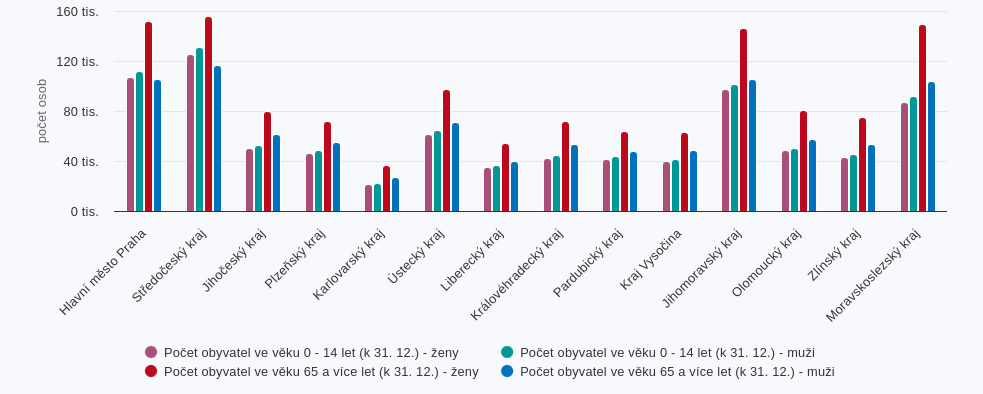

DOMŮ
ČTIVO
HRY
VIDEA
DOMŮ
ČTIVO
HRY
VIDEA
VÍTE, ŽE V ČESKU JE O 215 TISÍC ŽEN VÍCE NEŽLI MUŽŮ?
Podobné články:
- Žádné podobné články zde nejsou
V Česku je 5 557 945 žen a 5 342 610 mužů. Za těmito čísly můžeme hledat různé viníky, ale určitě na tom činí velký podíl fakt, že ženy se dožívají v průměru o 6 let více než muži. Ženy se v průměru dožívají 82 let a muži jen 76 let, to je ovšem průměr celé České republiky.
V Ústeckém kraji je totiž průměrný věk o 2 roky nižší než průměr ČR a má rovněž nejnižší dožití v zemi. Na druhé straně je Praha, ta je 1 rok v plusu oproti průměru.
Rovněž zajímavé je oproti mužům i nádherné vidět v počtech úmrtí v ČR za rok 2023, kde ve věku 15-64 let zemřelo 5 451 a mužů ve věku 15-64 let zemřelo 12 109, což je téměř 7 tisíc více (zkrátka více než dvakrát tolik!).
Když je více žen než mužů, znamená to, že se rodí více žen?
Ne, podle statistik z roku 2023 je totiž do 57 let více mužů než žen. Poté se to převrací. To také můžete pozorovat v grafu níže:
